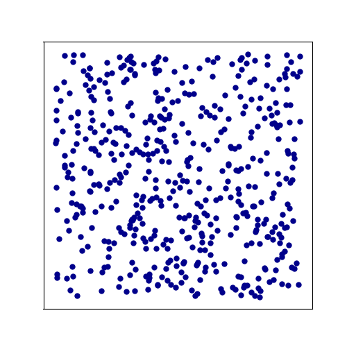
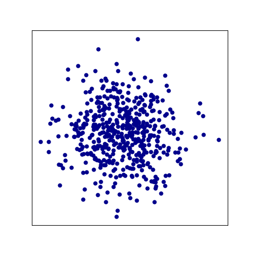
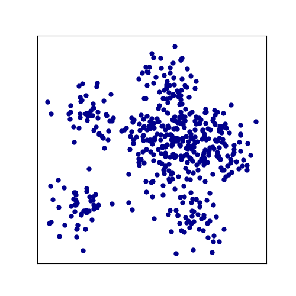

Common CO Problems in ML4CO
Last updated on July 30, 2025 pm
本文介绍了 ML4CO 中经常被研究的组合优化问题（如 TSP 等选边问题和 MIS 等选点问题）及相应的数据集生成算法。
Traveling Salesman Problem (TSP)
旅行商问题（TSP）是组合优化领域中最经典、最具代表性的问题之一，属于选边的问题。
问题描述
这边引用 [2] 中的一段非常有趣的描述：
Imagine yourself travelling to a scientific conference. The field is popular, and surely you do not want to miss out on anything. You have selected several posters you want to visit, and naturally you must return to the place where you are now: the coffee corner. In which order should you visit the posters, to minimize your time walking around? This is the Travelling Scientist Problem (TSP).
You realize that your problem is equivalent to the Travelling Salesman Problem (conveniently also TSP). This seems discouraging as you know the problem is (NP-)hard.
旅行商问题一般描述为：给定一组城市及它们之间的距离（或代价），一名旅行商需要从其中一个城市出发，访问每个城市恰好一次，最终返回出发城市。目标是找到一条总行程距离最短的路径。
或者更 formal 的表述：TSP 问题要求在一个图中找到一条最短的回路，使得每个顶点恰好被访问一次，最终回到起始顶点。
在 ML4CO 中，我们一般研究二维欧几里得情形的 TSP 问题，即
- 输入：
points：N个顶点的坐标，形状为(B, N, 2)
- 输出：
tour：访问每个顶点的顺序（含返回起点），形状为(B, N+1)
- 目标值：回路总长度，越小越好
生成方法
按照惯例，我们一般生成固定顶点数的数据集。
Uniform（均匀分布）
1 | |
即在单位正方形内完全随机地撒点。生成的节点会非常均匀地、无规律地散布在 范围内的正方形区域里。这种数据是TSP问题中最基础、最通用的基准测试类型。

Gaussian（高斯分布）
1 | |
节点从高斯分布中采样，即让所有节点都围绕着一个中心点密集分布，越靠近中心越密集，越远离中心越稀疏。这种分布模式在现实世界中也很常见，比如模拟一个城市群，其中有一个中心大城市和周围的卫星城。

Cluster（簇状分布）
1 | |
Cluster 的生成过程是：先随机确定几个聚集中心，然后让节点分别围绕着这几个中心形成多个小团体（簇）。因此，生成的节点呈现出明显的簇结构，簇内节点距离近，簇间节点距离远。这种数据分布非常贴近许多现实世界的物流问题，例如需要去几个不同的城市群送货，每个城市群内部又有多个配送点。
对于 TSP 求解器来说，这种结构通常更具挑战性，因为它需要在“先跑完一个簇再到下一个”和“在不同簇之间来回穿梭以寻找更优路径”之间做出权衡。

参考资料
[1] https://github.com/Thinklab-SJTU/ML4CO-Kit
[2] W. Kool, H. Van Hoof, and M. Welling, “Attention, learn to solve routing problems!” arXiv preprint arXiv:1803.08475, 2018.